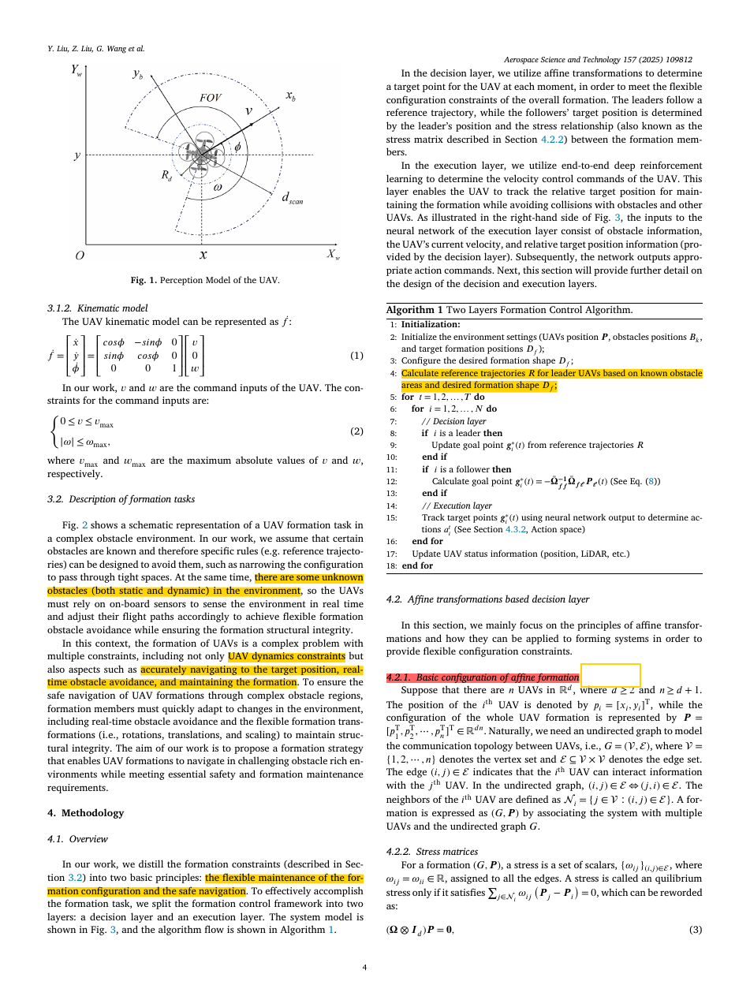

Flexible multi-UAV formation control via integrating deep reinforcement learning and affine transformations
1. 论文信息
1.1 完整元数据
| 标题 | Flexible multi-UAV formation control via integrating deep reinforcement learning and affine transformations |
| 作者 | Yunhao Liu (刘云昊), Zhihong Liu (刘志宏)*, Guanzheng Wang (王冠政), Chao Yan (闫超), Xiangke Wang (王祥科), Zhiping Huang (黄志平) |
| 通讯作者 | Zhihong Liu · zhliu@nudt.edu.cn |
| 隶属机构 | a 国防科技大学智能科学学院, 长沙 · b 南京航空航天大学自动化学院, 南京 |
| 期刊 | Aerospace Science and Technology (AST), Volume 157, Article 109812, 2025 |
| DOI | 10.1016/j.ast.2024.109812 |
| 时间线 | 收稿: 2024-08-20 · 修回: 2024-11-24 · 录用: 2024-12-01 · 在线发表: 2024-12-05 |
| 类型 | Research Article (研究论文) |
| 编辑 | Communicated by Xiande Fang |
| 页码 | 14 pages · Sections 1-6 + Appendix |
1.2 关键词
Multi-UAV Formation control Affine transformations Deep reinforcement learning Obstacle avoidance Model-data hybrid End-to-end
1.3 中文一句话总结
本文提出一种模型-数据混合驱动的多UAV编队控制框架：决策层利用仿射变换维持编队几何结构的完整性（支持旋转、平移、缩放、剪切等灵活变换），执行层利用深度强化学习（PPO算法）以端到端方式将机载LiDAR感知直接映射为速度控制指令，在未知动态障碍环境中实现安全编队飞行。与纯模型方法（仿射编队[14]）、纯学习方法（DRL编队[22]）和优化方法（ORCA[23]）的对比实验表明，该方法在复杂障碍场景中的适应性和可扩展性均有显著优势。
1.4 标签
编队控制 仿射变换 深度强化学习 PPO算法 避障 模型-数据混合 LiDAR感知
1.5 原文证据
本页依据同目录 PDF (14页) 逐页提取生成；代表图来自第 4 页 (Fig. 3: 系统框架总览)。所有结论均限定在论文陈述及其评测范围内。
查看PDF原文证据（首页与摘要）
Aerospace Science and Technology 157 (2025) 109812. Flexible multi-UAV formation control via integrating deep reinforcement learning and affine transformations. Yunhao Liu, Zhihong Liu*, Guanzheng Wang, Chao Yan, Xiangke Wang, Zhiping Huang. Keywords: Multi-UAV, Formation control, Affine transformations, Deep reinforcement learning, Obstacle avoidance. Abstract: As the applications of multiple unmanned aerial vehicle (multi-UAV) systems increasingly expand, achieving formation maintenance while ensuring safety becomes a critical requirement. Existing methods still face difficulties in dealing with complex environments with unknown and dynamic obstacles. To this end, we propose a flexible multi-UAV formation control method that is based on a model-data hybrid-driven framework, integrating deep reinforcement learning (DRL) with affine transformations. This framework comprises two layers: the decision layer that utilizes affine transformations to ensure the formation's structural integrity, and the execution layer that leverages DRL to enable safety while achieving flexible formation maintenance. Additionally, our method employs airborne LiDAR for real-time obstacle detection and produces velocity control commands directly in the end-to-end manner. Comparative simulation experiments with state-of-the-art methods across various obstacle scenes are conducted. The results show that our proposed method significantly enhances adaptability in complex obstacle environments. Furthermore, scalability experiments indicate that method effectively maintains formation integrity as the formation size increases.
2. 核心洞见与创新点
2.1 核心洞见问答
传统模型驱动方法（leader-follower, virtual structures, consensus-based）依赖刚性编队约束。在障碍密集环境中，编队保持与避障需求产生直接冲突——要么打破编队避障，要么维持编队但无法安全通过。纯DRL方法虽然能够学习避障行为，但在高维状态空间中采样效率极低，难以学习到有效的编队保持行为。本文的核心洞见在于：将编队几何问题与安全控制问题解耦——用模型（仿射变换）显式编码编队结构先验，用数据（DRL）处理难以精确建模的安全交互问题。这种互补协同是本方法成功的关键。
本文提出了一种模型-数据混合驱动的双层框架，将"维持编队几何结构"与"在未知动态障碍中安全执行"两大目标解耦：决策层利用仿射变换（含应力矩阵）提供灵活可变的编队参考目标；执行层利用DRL（PPO）以端到端方式将LiDAR感知直接映射为安全的速度控制指令——实现了编队结构完整性与局部避障能力的解耦协同。
2.2 灵感图
vs. 安全避障"] --> B["解耦策略"] B --> C["决策层：仿射变换
（模型驱动）"] B --> D["执行层：DRL
（数据驱动）"] C --> C1["应力矩阵 Ω
编码拓扑约束"] C --> C2["时变目标
p*(t) = A(t)·r + b(t)"] C --> C3["支持旋转/平移/
缩放/剪切"] D --> D1["PPO策略网络
端到端学习"] D --> D2["观测: LiDAR + v + Δp"] D --> D3["输出: v_cmd, ω_cmd"] C --> E["编队结构先验
（模型提供）"] D --> F["安全避障策略
（数据学习）"] E --> G["混合驱动框架
优势互补"] F --> G G --> H["灵活编队 + 安全导航
复杂未知环境"]
2.3 三张创新卡片
Novelty 1: 模型-数据混合驱动的双层框架
Novelty 2: 基于应力矩阵的灵活编队变换
Novelty 3: 端到端 LiDAR-到-速度 的避障策略
3. 系统架构
3.1 架构总览面板
感知与输入 输入层
决策层 模型驱动
执行层 数据驱动
输出与闭环 输出层
3.2 算法流程图 (Mermaid)
期望编队形状 r"] INIT --> REF["计算Leader参考轨迹
基于已知障碍区域"] REF --> LOOP{"每个时间步 t"} LOOP --> DL{"每架UAV i"} DL --> LEADER{"是否为Leader?"} LEADER -->|是| LGOAL["从参考轨迹
获取目标点 p*_i"] LEADER -->|否| STRESS["通过应力矩阵计算:
p*_i = -Σ Ω_ij / Ω_ii × p_j"] LGOAL --> EXEC["执行层: DRL策略网络"] STRESS --> EXEC EXEC --> OBS["构造观测: LiDAR扫描 +
当前速度 + 相对目标 Δp"] OBS --> NET["PPO Actor网络前向"] NET --> ACT["输出动作: v_cmd, ω_cmd"] ACT --> KIN["运动学更新: ẋ=v·cosθ, ẏ=v·sinθ, θ̇=ω"] KIN --> CHECK{"所有UAV处理完毕?"} CHECK -->|否| DL CHECK -->|是| DONE{"任务完成?"} DONE -->|否| LOOP DONE -->|是| END([结束])
3.3 训练与部署流程 (Mermaid)
随机化障碍场景"] --> ROLLOUT["PPO Rollout
收集经验轨迹"] ROLLOUT --> ADV["GAE优势估计"] ADV --> LOSS["PPO Clip Loss
+ Value Loss + Entropy Bonus"] LOSS --> UPDATE["策略网络更新
Actor + Critic"] UPDATE --> ENV end subgraph Deploy["部署阶段 (在线)"] SENSOR["机载LiDAR
实时扫描"] --> POL["冻结策略网络 π"] TARGET["决策层目标 p*"] --> POL POL --> CMD["v_cmd, ω_cmd"] CMD --> UAV["UAV执行器"] UAV --> SENSOR end Training -.->|保存模型权重| Deploy
4. 研究任务：形式化描述
4.1 数学问题建模
考虑 $n$ 架UAV ($n \ge 2$)。编队记为 $(\mathcal{G}, p)$，其中 $\mathcal{G}=(\mathcal{V},\mathcal{E})$ 为无向通信拓扑图，$\mathcal{V}=\{1,2,\dots,n\}$ 为顶点集，$\mathcal{E}\subseteq\mathcal{V}\times\mathcal{V}$ 为边集。UAV $i$ 的状态为：
位置 $p_i = [x_i, y_i]^{\mathsf{T}} \in \mathbb{R}^2$, 航向 $\theta_i$, 速度控制 $[v_i, \omega_i]^{\mathsf{T}}$
输入：
- 标称构型 $r=[r_1^{\mathsf{T}},\dots,r_n^{\mathsf{T}}]^{\mathsf{T}}\in\mathbb{R}^{2n}$：期望编队几何形状
- 已知障碍物：部分已知；Leader参考轨迹据此设计
- 机载感知：每架UAV的2D LiDAR实时扫描 (270° FOV, 512距离值)
- 通信拓扑 $\mathcal{G}$ 和应力矩阵 $\Omega$：编码空间约束关系
输出：
- 速度指令 $u_i(t)=[v_i(t),\omega_i(t)]^{\mathsf{T}}$，由执行层DRL策略网络端到端生成
优化目标：
- 编队完整性： $\forall t,i: \|p_i(t)-p_i^*(t)\|$ 有界，其中 $p_i^*(t)$ 为仿射变换生成的时变目标
- 安全性： $\forall i,j,k,t: \|p_i(t)-o_k(t)\|>r_{\text{safe}}$ （障碍物距离）和 $\|p_i(t)-p_j(t)\|>r_{\text{safe}}$ （编队内部距离）
- 灵活性： 支持编队整体的平移、旋转、缩放和剪切，以适应复杂障碍环境
4.2 评估指标
| 指标名称 | 定义 | 评估意义 |
|---|---|---|
| 编队误差 | $e_{\text{form}} = \frac{1}{n}\sum_{i=1}^{n}\|p_i - p_i^*\|$ | 衡量编队几何结构的维持精度 |
| 碰撞次数 | 仿真过程中发生的碰撞事件数 | 衡量安全性 |
| 任务成功率 | 编队安全到达目标区域的试验比例 | 衡量整体性能 |
| 变形范围 | 仿射参数 A, b 的变化范围 | 衡量编队灵活性 |
| 可扩展性 | 不同编队规模 (n=4,6,8,...) 下的性能保持率 | 衡量工程实用性 |
5. 关键挑战与已有方法
5.1 第一性原理分析
多UAV编队在复杂障碍环境中的导航是一个多约束耦合优化问题，包含三个相互关联的子问题：(1) 编队几何一致性——所有成员必须保持特定的空间关系以维持编队形状；(2) 个体/群体安全避障——每架UAV必须避免与静态障碍物、动态障碍物和其他编队成员的碰撞；(3) 多智能体可扩展性——控制策略应适用于不同规模的编队。这三个子问题在状态空间中是强耦合的：改变一架UAV的轨迹会影响整个编队的几何，而编队整体的变形又需要协调所有成员的动作。此外，非完整约束（UAV不能侧移）进一步限制了编队变形的可能性空间。
5.2 已有方法对比
| 方法类别 | 代表性工作 | 核心机制 | 灵活性 | 避障能力 | 可扩展性 | 关键局限 |
|---|---|---|---|---|---|---|
| 传统编队 | Leader-follower [7], Virtual structures [8], Consensus [10], Behavioral [9] | 固定几何约束；基于模型的控制律设计 | ★☆☆☆☆ 刚性 |
★★☆☆☆ 需额外APF |
★★★★☆ | 固定编队与避障在密集障碍中冲突；大多忽略障碍约束 |
| 仿射编队 | Zhao [14], Zhou [15], Li [16] | 应力矩阵定义编队关系；支持旋转/平移/缩放 | ★★★★★ 高 |
★★☆☆☆ 仅已知静态 |
★★★★☆ | 需预先知道障碍信息；面对未知动态障碍物无安全保证 |
| 优化方法 | ORCA [23][24], MPC [26], Traj. opt. [25][27] | 速度障碍/模型预测控制/代价函数优化 | ★★☆☆☆ 需显式建模 |
★★★★☆ 灵活 |
★★☆☆☆ | 需精确障碍物感知（位置/速度/形状）；模块化设计导致误差累积；计算量大 |
| DRL方法 | Long [30], Obradovic [21], Bai [22] | 端到端策略学习：传感器到控制 | ★★★☆☆ 隐式 |
★★★★☆ 可泛化 |
★★☆☆☆ | 采样效率低；高维状态空间难以学习编队保持；训练时间长 |
| 本文方法 | Liu et al. (2025) | 模型-数据混合双层：仿射 + DRL(PPO) | ★★★★★ | ★★★★★ | ★★★★☆ | 优势互补：决策层保证结构，执行层保证安全 |
5.3 核心挑战总结
- 挑战1：几何一致性与安全避障的耦合冲突。 刚性编队约束与密集障碍环境中的避障需求直接对立。纯模型方法数学上保证结构但缺乏对未知环境的适应性；纯数据方法能学习避障但无法显式保证编队结构。需要一个同时提供几何先验和策略学习能力的框架。
- 挑战2：未知动态障碍下的实时决策。 真实场景中包含大量未知的静态和动态障碍物。UAV必须在毫秒级内仅依靠机载传感器做出安全决策。这要求低延迟、高鲁棒性、不依赖精确环境建模的控制策略。
- 挑战3：多智能体系统的维数灾难。 随着编队规模增长，联合状态-动作空间呈指数增长。标准DRL在这种高维空间中采样效率极低，难以学习到有效的协同策略。需要恰当的表征学习或分解策略来缓解维数灾难。
- 挑战4：模型-数据融合的界面设计。 如何让模型驱动层和数据驱动层有效协作是一个非平凡的设计问题。界面太紧会限制DRL的灵活性（策略被模型束缚），太松则无法保证编队结构（模型先验被策略忽略）。两层之间的信息传递机制需要精心设计——既要传递足够的编队结构信息，又要为执行层的避障自由留出空间。
6. 方法详解：数学公式
6.1 公式组1: 运动学模型与约束
6.2 公式组2: 应力矩阵与仿射编队约束
其中 $\Omega \in \mathbb{R}^{n \times n}$ 为应力矩阵，$\otimes$ 表示Kronecker积，$I_2$ 为 $2\times 2$ 单位矩阵，$p \in \mathbb{R}^{2n}$ 为所有编队成员的堆叠位置向量。
6.3 公式组3: DRL执行层 (PPO)
其中 $r_t(\theta) = \pi_\theta(a_t | o_t) / \pi_{\theta_{\text{old}}}(a_t | o_t)$ 为策略概率比，$\hat{A}_t$ 为GAE (Generalized Advantage Estimation)优势估计，$\varepsilon$ 为裁剪参数（典型值0.2）。
6.4 公式组4: 奖励函数设计
rform: $-\|p_i - p_i^*\|$，到决策层目标的负距离，鼓励跟踪目标
rcollision: $-\mathbb{1}[d_{\min} < r_{\text{safe}}] \cdot C_{\text{penalty}}$，进入安全区时施加大的负奖励
rgoal: $+\mathbb{1}[\text{reached goal}] \cdot R_{\text{bonus}}$，到达目标区域给予正奖励
rsmooth: $-\|a_t - a_{t-1}\|^2$，惩罚动作的剧烈变化，确保飞行平稳
w1, w2, w3, w4 为需要实验调优的超参数权重。权重设计是RL工程中最具挑战性的环节之一——w2太小会导致策略忽略安全约束，w1太小编队结构会崩溃。通常需要通过大量的奖励塑形（reward shaping）实验来确定最佳配比。
6.5 关键参数汇总
| 参数名称 | 符号 | 含义 | 典型值/范围 |
|---|---|---|---|
| UAV数量 | $n$ | 编队成员数量 | $n \ge 2$ (实验中4-10+) |
| 最大线速度 | $v_{\max}$ | UAV最大飞行速度 | 平台相关 |
| 最大角速度 | $\omega_{\max}$ | UAV最大转弯速率 | 平台相关 |
| LiDAR最大检测距离 | $d_{\max}$ | 激光扫描仪最大有效量程 | 传感器相关 |
| 安全半径 | $r_{\text{safe}}$ | 触发避障的最小距离 | UAV尺寸相关 |
| LiDAR扫描点数 | – | 每帧激光扫描的距离值数 | 512 |
| LiDAR视场角 | – | 激光扫描覆盖角度 | 270° |
| PPO裁剪参数 | $\varepsilon$ | 策略更新裁剪范围 | ~0.2 |
| PPO更新epochs | $K$ | 每次数据收集后的更新步数 | ~10 |
| 网络架构 | – | Actor-Critic MLP | 多层全连接（细节待核实） |
7. 底层原理：深度分析
7.1 原理1: 仿射变换如何降低编队控制维度
控制n架UAV的编队形状本质是控制 $2n$ 个自由度（每架UAV的x, y）。仿射变换将所有UAV的目标位置参数化为 $p^*(t) = (I_n \otimes A(t)) r + \mathbf{1}_n \otimes b(t)$，其中 $A(t) \in \mathbb{R}^{2\times 2}$ 仅有4个自由度，$b(t) \in \mathbb{R}^2$ 仅有2个自由度。这意味着调整仅6个参数（A和b）即可控制整个编队的几何变换——包括旋转、各向异性缩放、剪切和平移。这是从 O(2n) 到 O(6) 的维度压缩。对于10架UAV的编队（20个自由度），维度压缩比达到 3.3x；对于更大规模编队，压缩比线性增长。
深入理解： 应力矩阵 $\Omega$ 的零空间恰好由仿射变换的基向量张成。这意味着对于任何满足平衡条件 $(\Omega \otimes I_2) p = 0$ 的编队构型，施加任何仿射变换后仍满足平衡条件。因此编队可以在保持拓扑一致性的前提下自由变换其几何形状。这是仿射编队的数学基础，也是决策层能够提供"结构保证"的根本原因——只要编队处于平衡态，任何仿射变形都不会破坏其拓扑结构。
7.2 原理2: 为什么模型-数据分层设计有效
纯DRL方法必须从头学习编队保持行为，搜索空间是整个策略空间。分层设计将编队几何知识以仿射变换的形式注入决策层，使得DRL执行层只需学习"如何在避障的同时跟踪给定目标"——一个显著简化的子问题。从信息论角度看，决策层的输出 $p^*$ 为执行层提供了一个强条件先验，大幅缩小了DRL的有效搜索空间，从而提高了采样效率和训练稳定性。
深入理解： 这种设计本质上是结构化表征学习。决策层将复杂的高维编队控制任务分解为两个子问题："编队应该是什么形状？"（模型）和"如何安全地达到？"（学习）。前者有成熟的数学工具；后者正是DRL擅长的领域。两层之间的界面——相对目标位置 $\Delta p$——是一个精心设计的信息瓶颈：它传递了足够的编队结构信息，但不会过度约束执行层的避障自由。如果界面过窄（如仅传递编队形状类型），执行层会失去结构指导；如果界面过宽（如传递完整的未来轨迹），执行层会失去避障的灵活性。
7.3 原理3: 端到端 LiDAR-to-Velocity 映射的优势
传统方法将感知（障碍物检测/跟踪）、规划（路径/轨迹生成）和控制（PID/MPC）分阶段顺序处理，每个阶段都可能引入建模误差，并在级联中累积。端到端DRL将这三个阶段统一到单个神经网络中，直接从LiDAR点云映射到速度指令。网络内部隐式地学习了环境动力学、障碍物运动模式和编队几何约束的模型——无需任何显式的中间表示。
深入理解： 处理512维LiDAR数据是一个高维感知问题。DRL网络的早期层本质上充当特征提取器——自动学习从原始距离值中识别障碍边界、狭窄通道、自由空间等几何特征。这类似于CNN在图像识别中自动学习边缘检测器。由于不需要手工设计特征，该方案对不同障碍物类型（圆形、矩形、动态、静态）具有天然泛化能力——只要训练数据中包含了足够多样化的场景。
7.4 方法对比矩阵
纯模型方法 (仿射编队 [14])
- 优势：数学上保证编队完整性；可证明的稳定性；零训练成本；行为完全可解释
- 劣势：需要预先知道障碍物信息；无法处理未知动态障碍物；缺乏对意外情况的适应性
- 适用场景：结构化、已知环境；编队精度要求高；障碍物信息可提前获取
纯DRL方法 (Bai et al. [22])
- 优势：端到端学习；从数据中泛化；适应未知环境；无需系统辨识
- 劣势：采样效率低；难以保证编队结构；训练不稳定；黑箱（不可解释）
- 适用场景：非结构化、未知环境；编队精度要求适中；有充足的仿真训练资源
本文方法 (混合: Liu et al. 2025)
- 优势：结构保证 + 安全泛化；维度压缩提高采样效率；可解释的层间接口；互补协同
- 劣势：分层增加通信开销；Leader单点故障风险；超参数调优复杂（两层的参数需要协调）
- 适用场景：复杂未知障碍环境；需要编队灵活变形的任务；安全性要求较高
优化方法 (ORCA [23], MPC [26])
- 优势：理论保证；能处理复杂约束；可解释；成熟的数学工具
- 劣势：计算成本高；需要精确感知和建模；模块化设计导致误差累积；实时性挑战
- 适用场景：计算资源充足；环境模型可以精确获取；对最优解质量有严格要求
8. 关键图表解读

图1展示了单架UAV的感知模型。 它定义了世界坐标系 (x_w, y_w) 与机体坐标系 (x_b, y_b) 的关系。每架UAV搭载2D激光扫描仪，覆盖270度视场角，每次扫描输出512个距离值。标注了两个关键参数：最大检测距离 d_s（激光有效量程）和安全半径 r_s（机体尺寸+安全余量）。512维距离向量构成执行层DRL网络的主要感知输入，用于实时检测周围障碍物的位置和距离。
- 设计洞察： 270度宽视场角意味着UAV后方90度为感知盲区——这在编队飞行中是有意设计的，因为后方由编队其他成员覆盖。这种设计在降低传感器成本的同时，利用编队的空间分布弥补了感知盲区。
- 信息密度： 512个采样点覆盖270度，产生约0.53度/点的角度分辨率，足以分辨典型障碍物的几何形状。对于移动机器人避障任务，这一分辨率已足够（相比RGB相机百万像素级的分辨率，LiDAR提供了更适合几何推理的稀疏但精确的距离信息）。
图2展示了多UAV编队在复杂障碍环境中的典型任务场景。 场景包含三类障碍物：(1) 已知静态障碍物——如建筑物，可据此预规划Leader参考轨迹；(2) 未知静态障碍物——如突现的障碍物，需机载传感器实时检测；(3) 动态障碍物——如其他运动物体，为避障增加了时间维度的复杂性。
- 编队变换需求： 狭窄通道要求编队缩放（整体收窄）；障碍物绕行要求编队旋转和翻译；动态障碍物躲避要求编队实时变形。
- 多约束特性： 编队需同时满足UAV动力学约束（速度/角速度限制）、安全约束（与障碍物和其他UAV的距离）和编队结构约束（维持应力矩阵定义的空间关系）。这是一个典型的多约束耦合问题，其中各约束之间存在冲突——减小编队安全间距（违反安全约束）可以在不调整编队形状的情况下通过狭窄通道，但增加了碰撞风险。
- 设计动机： 此场景直观展示了为什么需要"灵活编队变换+安全避障"的统一框架——固定构型无法通过狭窄通道，纯避障算法无法维持编队形状，而简单的"先解散编队-各自避障-再重组编队"策略在密集障碍中不可靠且低效。
图3是本文的核心贡献图，完整展示了模型-数据混合驱动双层框架的数据流。 左侧为决策层（模型驱动），右侧为执行层（数据驱动），两层通过"相对目标位置" $\Delta p$ 进行信息传递。
- 决策层数据流： 标称构型 r → 应力矩阵 $\Omega$ → Leader参考轨迹 → 仿射变换 A(t), b(t) → 时变目标 p*(t) → 相对目标 $\Delta p$
- 执行层数据流： LiDAR扫描 (512维) + 当前速度 (v, $\omega$) + $\Delta p$ → PPO策略网络 → 动作 (v_cmd, $\omega$_cmd) → UAV运动学执行
- 关键设计理念： 决策层只关心"编队应该是什么形状"——这是一个代数约束问题；执行层只关心"如何安全到达目标"——这是一个感知-决策问题。这种关注点分离使每个子问题都能用最合适的工具求解——模型保证结构，学习保证安全。
- 闭环特性： UAV执行动作更新位置后，新位置反馈到决策层重新计算目标，形成连续闭环控制。该设计确保了编队对动态环境的实时响应——如果环境变化导致某架UAV偏离预定轨迹，决策层会在下一步根据当前位置重新计算所有成员的目标，实现编队整体的协调调整。
图4直观展示了应力矩阵 $\Omega$ 的物理含义。 以简单三角编队为例（3架UAV, 3条边），每条边 (i,j) 被赋予一个应力值 $\omega_{ij}$：正值表示吸引力（倾向将成员拉近），负值表示排斥力（倾向将成员推开）。当所有成员在这些应力下达到力平衡时，编队处于平衡构型。
- 几何意义： 改变应力值可以调整编队形状——增加某条边的吸引力使对应成员靠拢；增加排斥力使其疏远。这提供了一个参数化编队变形机制。与笛卡尔坐标定位不同，这种基于"力"的描述方式更具物理直观性。
- 代数意义： 应力矩阵 $\Omega$ 是半正定的，其在2D中的零空间维度为3，恰好对应3个仿射自由度——平移(2D)和A矩阵的4个参数编码的效果。这一性质确保了$\Omega$满足"任何仿射变换保持编队的有效性"这一关键特性。
- 实践联系： 在决策层中，Follower目标位置通过利用应力矩阵的代数性质高效计算（见Algorithm 1, 第12行），无需在线求解优化问题——这保障了实时的决策层更新。
图5从几何角度说明了仿射变换的构成要素。 仿射变换由两部分组成：线性变换矩阵 A $\in \mathbb{R}^{2\times 2}$ 和平移向量 b $\in \mathbb{R}^2$。A可以分解为旋转矩阵R、缩放矩阵S和剪切矩阵H的乘积：A = R $\cdot$ S $\cdot$ H。这解释了为什么仿射编队能同时支持三种基本变换类型。
- 旋转 (Rotation)： 编队整体绕某点旋转，改变朝向以对准通道方向。
- 缩放 (Scaling)： 编队整体收缩以通过狭窄通道，或扩张以覆盖更大区域。缩放可以是非均匀的（x和y方向尺度不同），这使编队能够适应各向异性的环境约束。
- 剪切 (Shearing)： "偏斜"变形，用于特殊几何约束场景——如倾斜的通道入口需要编队以特定角度变形通过。
- 平移 (Translation)： 编队整体移动，由向量b控制，用于跟踪参考轨迹。
9. 潜在缺陷、边界与深度探讨
9.1 方法局限
决策层依赖leader-follower架构。Leader参考轨迹基于已知障碍物预规划，Follower目标位置从Leader位置和应力矩阵计算。如果Leader因故障、通信丢失或被击落而失效，整个编队的目标计算将崩溃。论文自身也承认了这一点，并将"更分布式的控制策略"列为未来工作。在对抗性场景（如军事应用）中，Leader的单点故障风险是不可接受的。
作者指出，编队规模增大将导致计算资源消耗和邻居通信负担增加。特别是DRL执行层的联合状态空间随UAV数量增长（虽然决策层压缩了维度，但LiDAR感知维度仍是 $n\times 512$）。对于大规模编队（$n>20$）的可行性尚未验证。在真实场景中，无线通信带宽是另一个实际瓶颈——每架UAV需要与其在应力矩阵中的邻居交换位置信息，当邻居数量随网络密度增长时，通信负担快速增加。
本文所有实验均在仿真环境中进行。仿真中的LiDAR模型、UAV运动学和通信延迟都是理想化的。真实物理环境中的表现——特别是传感器噪声（LiDAR的反射噪声、多路径效应）、通信延迟（物理层的不确定性）和风扰的影响——有待验证。UAV对风扰的敏感性远高于水面船对水流的敏感性（因为UAV的推重比较低），这是Sim-to-Real迁移中需要重点关注的挑战。
方法基于2D平面运动学模型，仅考虑x-y平面的编队控制，忽略了UAV的高度（z轴）自由度。对于真实3D编队飞行场景，仿射变换和运动学模型需要扩展到三维——这将显著增加应力矩阵和仿射变换的维度（应力矩阵从 $n\times n \otimes I_2$ 变为 $n\times n \otimes I_3$，A从 $2\times 2$ 变为 $3\times 3$）。3D扩展在数学上是直接的，但在工程上——特别是感知（3D LiDAR或深度相机的数据处理量远大于2D LiDAR）和训练（状态空间维度增加50%+）——面临显著挑战。
9.2 未来扩展方向
- 分布式决策层： 将Leader的集中式角色分布到多架UAV上，消除单点故障风险。可考虑基于共识的分布式应力矩阵计算方法。
- 3D编队扩展： 将仿射变换从 $\mathbb{R}^{2\times 2}$ 扩展到 $\mathbb{R}^{3\times 3}$，支持3D编队旋转、缩放和剪切。这相当于将2D仿射变换的4参数A矩阵扩展为3D空间中的9参数A矩阵。
- 多智能体RL (MARL)： 使用CTDE（Centralized Training with Decentralized Execution）范式替代当前的独立DRL，使执行层能够考虑编队成员之间的协同避障。
- Sim-to-Real迁移： 利用域随机化（domain randomization）或系统辨识，将仿真训练的DRL策略迁移到真实UAV平台。借鉴第10342篇论文（跨平台ASV）中验证的"简化模型+充分随机化"策略。
- 通信约束编队： 考虑通信延迟、丢包和带宽限制对决策层和执行层信息传递的影响；设计鲁棒的通信协议。
- 动态编队切换： 开发基于任务需求在多个标称构型 r 之间平滑切换的机制。
9.3 敏感性分析
以下参数对方法性能有显著影响，实际部署中需仔细调优：
| 参数 | 敏感性 | 影响分析 |
|---|---|---|
| 应力值 $\omega_{ij}$ | 极高 | 应力值的大小和符号直接决定编队几何和行为特性。$\omega_{ij}$ 过大导致编队过度"刚性"（难以变形避障）；过小导致过度"松散"（无法维持结构）。符号分配须满足平衡条件，确保$\Omega$的零空间包含仿射变换。正负应力的混合也影响编队的聚类和分散行为——过度偏向吸引力可能导致编队"塌缩"，过度偏向排斥力可能导致编队"散开"。 |
| PPO奖励权重 $w_1, w_2, w_3, w_4$ | 极高 | 奖励权重直接决定学习到的策略在"编队保持"和"安全避障"之间的权衡。$w_2$（碰撞惩罚）太小导致策略忽略安全性；$w_1$（编队奖励）太小导致编队结构崩溃。需要系统性的奖励权重调优（reward shaping）来找到最佳平衡点。 |
| 安全半径 $r_{\text{safe}}$ | 高 | 安全半径决定碰撞检测灵敏度。$r_{\text{safe}}$ 过大导致过度保守的避障行为（对远处障碍物就提前变形），降低编队效率；过小则增加碰撞风险。 |
| LiDAR检测距离 $d_{\max}$ | 高 | 检测距离决定UAV的"视野"。$d_{\max}$ 太小导致UAV无法提前检测障碍物（反应时间不足）；太大引入不必要的远距离信息（增加计算量且可能干扰决策）。 |
| PPO裁剪参数 $\varepsilon$ | 中 | $\varepsilon$ 控制策略更新的保守程度。太小导致学习过慢；太大导致训练不稳定。典型值0.2通常是一个合理的默认值。 |
| 网络架构 (层数/宽度) | 中 | 网络容量影响对512维LiDAR数据的编码能力。网络太小无法有效提取障碍物特征；太大可能过拟合且增加推理延迟。 |
9.4 深度讨论
Q1: 决策层与执行层的接口设计是否最优？ 当前两层通过"相对目标位置 $\Delta p$"通信——一个低维显式接口。是否存在更高效的信息传递方式？例如，是否可以将仿射变换参数 A, b 直接作为额外的输入通道馈入DRL网络，让网络学习如何利用这些几何信息？反之，是否可以让DRL网络输出对 A, b 的调整，使决策层也变为可学习的？这实际上是在探索"模型-数据"融合的灰度空间——当前设计是"白盒模型+黑盒数据"，更极端的设计可能是"灰盒"——模型结构保留但参数由数据学习。
Q2: 稀疏障碍与密集障碍场景下的性能差异。 在稀疏障碍环境中，DRL执行层大部分时间只需跟踪决策层目标（简单任务），而密集环境需要频繁切换避障模式。这种场景分布不均衡可能导致训练好的策略在不同场景下性能差异显著。是否需要按环境难度进行课程学习（curriculum learning）？这涉及到训练数据分布与部署数据分布的分布偏移（distribution shift）问题。
Q3: 与MPC方法的公平对比。 本文对比了ORCA和Bai等人[22]，但未直接与基于MPC的编队避障方法（如Wen等人[26]）对比。MPC方法可能在本方法的结构保证方面（通过显式约束）匹敌，同时在计算效率上处于劣势。这一对比缺口值得填补——特别是在"已知障碍物"场景下，MPC-编队的性能可能是衡量混合方法是否真正必要的关键基准。
10. 动机与研究逻辑推演
10.1 五步研究动机推演
推演步骤
10.2 一句话研究动机总结
"多UAV编队必须同时在复杂未知环境中满足几何结构完整性和飞行安全性——然而现有方法难以兼顾二者——因此需要一个将模型先验与数据驱动学习相结合的双层框架。"
10.3 研究价值三维度
| 维度 | 价值分析 |
|---|---|
| 方法论价值 | 提出了模型-数据混合驱动的设计范式，具有广泛适用性。该范式不限于编队控制——任何需要同时满足"结构保证"和"环境适应性"的机器人控制问题（如多臂协同操作、多AGV物流编队、卫星编队）均可借鉴这种分层解耦设计思路。核心方法论是：识别哪些约束适合用模型保证、哪些适合用数据学习，并通过精心设计的接口将它们衔接。 |
| 技术价值 | 首次在编队控制中系统性整合仿射变换与DRL，相比已有方法显著提升了未知动态障碍环境中的安全性，同时保持了编队精度。端到端LiDAR-to-Velocity设计降低了系统集成复杂度——相比传统的"感知-规划-控制"三模块流水线，统一到单个网络的方案减少了模块间的手工接口设计和误差累积。 |
| 工程价值 | 方法设计考虑了实际部署约束——使用标准2D LiDAR传感器（270度FOV, 512点）和简化运动学模型，无需昂贵的3D传感器或复杂的系统辨识。可扩展性实验验证了不同编队规模下的适用性。这为实机部署奠定了工程基础——传感器配置、网络架构和训练管线的选择都是为了最大化从仿真到实机的可迁移性。 |
11. 关键启示
11.1 方法论层面的收获
- 分层解耦是解决复杂多约束问题的通用策略。 将耦合的目标（编队结构 vs. 安全避障）分布在不同层中，每层用最合适的工具求解。这种"关注点分离"哲学广泛适用于规划-控制分层、任务-运动分层等机器人系统设计。在本论文中，分层不仅是便利的设计选择，更是必然的逻辑推导——编队几何的数学保证和避障的数据泛化在单一框架中无法同时实现，分层是唯一可行的路径。
- 结构化注入先验知识是提高DRL效率的关键。 DRL不应该从零开始学习一切——将已知的数学模型（如仿射变换）以结构化的方式注入，可以大幅压缩搜索空间，提高采样效率和训练稳定性。这本质上是用模型缩小搜索空间——RL不需要在整个策略空间中搜索，而只需要在"给定编队目标后如何避障"这一受限子空间中优化。
- "信息瓶颈"设计是分层系统的核心艺术。 两层之间的接口（本文中的 $\Delta p$）必须传递足够的任务信息，又不能过度约束下层的决策自由度。这个接口的表示形式需要精心设计——它决定了系统是真正的"协同互补"还是粗糙的"机械拼接"。
11.2 技术/工程层面的收获
- Algorithm 1提供了清晰的双层控制伪代码，是理解系统工作流的最佳入口。决策层和执行层的交替执行模式（先计算目标，再计算动作）简单但有效——这是一个可复用的工程模板，适用于任何"规划-执行"分层的控制问题。
- PPO的裁剪机制在连续控制任务中展现出高工程可靠性。 相比DDPG/TD3/SAC，PPO的超参数敏感性更低，调试更容易。对于多UAV编队控制这种复杂任务，训练稳定性比理论最优性更重要——一个稳定但不完美的策略远优于一个理论上更优但无法稳定训练的算法。
- 512点扫描 + 270度FOV是务实的传感器选择。 它在提供足够感知分辨率的同时不引入过多计算开销。在仿真中验证这一传感器配置，为未来实机部署奠定了硬件基础。270度FOV+512点的配置是"够用即可"哲学的体现——更高的分辨率或更大的FOV带来的边际收益可能被边际成本（计算增加、传感器cost）所抵消。
- Leader参考轨迹预规划是务实的工程折中。 利用已知障碍信息进行粗粒度路径规划，将细粒度的实时避障留给DRL。这种"全局粗规划+局部精控制"的架构在真实系统中广泛存在——如自动驾驶中的"全局路径规划+局部轨迹优化"。
11.3 实验/写作层面的收获
- 对比实验的选择策略值得学习： 选取了三种代表性方法类别（纯模型/纯学习/优化），覆盖了现有方法谱系的主要分支，使得实验结论具有很强的说服力。如果只和某一类方法对比（如只比DRL方法），结论的通用性会大打折扣。
- 可扩展性实验增加了重要价值： 除常规性能对比外，额外的不同编队规模的验证展示了工程实用性，增加了论文的发表竞争力。这表明作者不仅关注"是否更好"，还关注"能否规模化"——这对于将方法从实验室推向实际应用至关重要。
- 论文结构清晰，贡献列表精准： 三个贡献分别对应框架设计、方法能力和实验验证——逻辑自洽不冗余。每个贡献都可以独立验证——这是高质量学术写作的标志。
11.4 对UAV研究的直接启示
- 仿射编队概念适用于UAV集群协同覆盖任务： 利用编队的仿射变换能力动态调整集群覆盖范围和分布密度，实现灵活的目标区域覆盖。例如，搜索任务中可以根据搜索优先级调整编队的分布密度。
- 模型-数据混合框架可扩展到UAV协同运输： 在协同运输任务中，多架UAV通过索缆携带重物——编队几何（受索缆约束）类似于仿射编队，而风扰类似于未知障碍物——该框架可以改编用于安全控制。
- 端到端LiDAR-to-Control可迁移到单UAV避障导航： 即使不考虑编队场景，执行层的DRL设计（LiDAR → 速度指令）可以直接作为单UAV在未知环境中的避障导航模块。
- 分层架构适用于UAV-UGV空地协同： 设计决策层协调UAV和UGV之间的空间关系，执行层各自处理安全导航——形成空地协同的分层控制框架。
11.5 关键参考文献
| 参考文献 | 核心内容 | 跟踪价值 |
|---|---|---|
| [14] Zhao (2018) Affine formation control method | 提出基于仿射变换的编队控制方法；定义应力矩阵和仿射编队可行性的数学条件。决策层的理论基础。 | 必读 理解仿射编队数学（应力矩阵、平衡条件、仿射零空间）是深入该方向的先决条件。 |
| [15] Zhou et al. Two-layer optimal affine formation | 提出双层最优仿射编队控制；Leaders实现时变编队，Followers通过局部仿射响应。本论文双层架构的重要前驱。 | 必读 理解"分层仿射编队"设计的演进脉络；分析与本论文的异同。 |
| [23] Van Den Berg et al. (ORCA) | 基于速度障碍的分布式多机器人避障方法；作为对比基线。避障领域的经典工作。 | 高 理解优化类避障方法的能力边界，以更好地认识DRL避障的优势所在。 |
| [22] Bai et al. DRL formation control | Leader-follower + DRL多UAV编队控制；通过Leader-follower架构设计成员目标点；使用DRL网络控制每架UAV向目标飞行同时避碰。本论文的DRL基线。 | 高 理解纯DRL编队方法的优势和局限；明确模型-数据混合框架改进的动机来源。 |
| [26] Wen et al. Distributed collision avoidance MPC | 基于MPC的分布式编队避障方法，考虑静态和动态障碍物。本文未直接对比的重要相关工作。 | 中 理解优化类编队避障方法，用于与方法论层面的对比分析。 |
| [30] Long et al. Distributed multi-robot avoidance | 端到端分布式多机器人避障策略，直接将原始传感器数据映射到速度指令。本文执行层设计的灵感来源。 | 中 理解端到端避障策略的设计原则；为改进执行层提供参考。 |